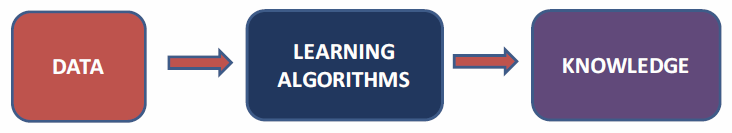
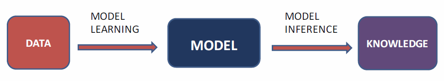

Kaggle style data analysis project, with leaderboard.
What is Kaggle1?
In 2010, Kaggle was founded as a platform for predictive modelling and analytics competitions on which companies and researchers post their data, and statisticians and dta miners from all over the world compete to produce the best models.
In April 2015, Kaggle released the first version of their Scripte2 product onto their platform. Scripts allows users to write, run, and publicly share their code on Kaggle. On 8 July 2016, Kaggle renamed its Scripts product to Kernels.
In January 2016, Kaggle released their Datasets3 product, making a selection of public datasets available on Kaggle.
Algorithms that improve their knowledge towards some task with data.

Machine Learning: the underlying mechanisms and algorithms that allow improving our knowledge with more data.
Statistics: the understanding of the data at hand.
Artificial Intelligence: build an intelligent agent.
Data Mining: to extract patterns from large-scale data
Data Science: the science encompassing collection, analysis, and interpretation of data.
Data
Tasks
Algorithms
Fully observed
Partially observed
systematically not observed.
missing some of the time.
Actively collect/sense data.
Model-based methods
Probabilistic model of the data
Parametric models
Nonparametric models
Model-free methods

Learning and Inference
Learning: from data to model
A model thus is a summary of the data, and also a story of how the data was generated.
Could thus be used to describe how future data can be generated.
Inference: from model to knowledge
given the model, what can we answer to the questions.
Parametric and Nonparametric
Parametric models
Fixed-size models that do not grow with the data.
More data \(\Rightarrow\) fit the model better.
Model: data = point on line + noise
Nonparametric models
Models that grow with the data.
More data \(\Rightarrow\) more complex model.
Model: data = point on smooth curve + noise
No modeling assumption.
Prediction: estimate output given input \[\text{given } X\in \text{ feature space } \mathcal{X} \text{, predict } Y\in \text{ label space } \mathcal{Y}\]
Classification: discrete labels
Regression: continuous labels
Description (also called unsupervised learning) \[\text{Given }X\in\text{ feature space }\mathcal{X}\text{, learn }f(X)\]
E.g.
Density estimation
Clustering
Dimensionality reduction
Supervised learning
Data consists of both inputs and outputs
Tasks consists of prediction
Semi-supervised learning
Data consist of inputs and only some of them with outputs
Tasks consists of prediction
Reinforcement learning
Data consists of rewards that come through taking actions that has a feedback
Task: maximize reward.
Multi-agent systems
multiple agents with same setup as in reinforcement learning.
the data also consists of other agents’ actions.